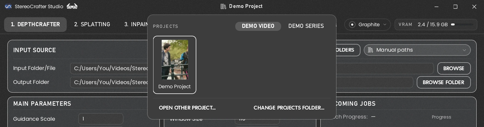
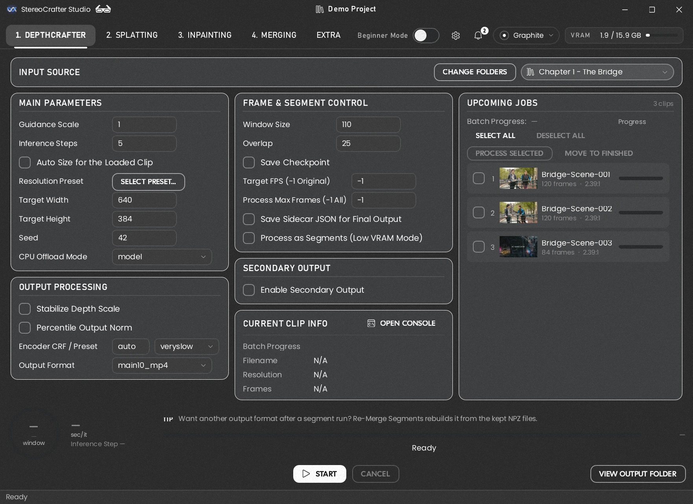
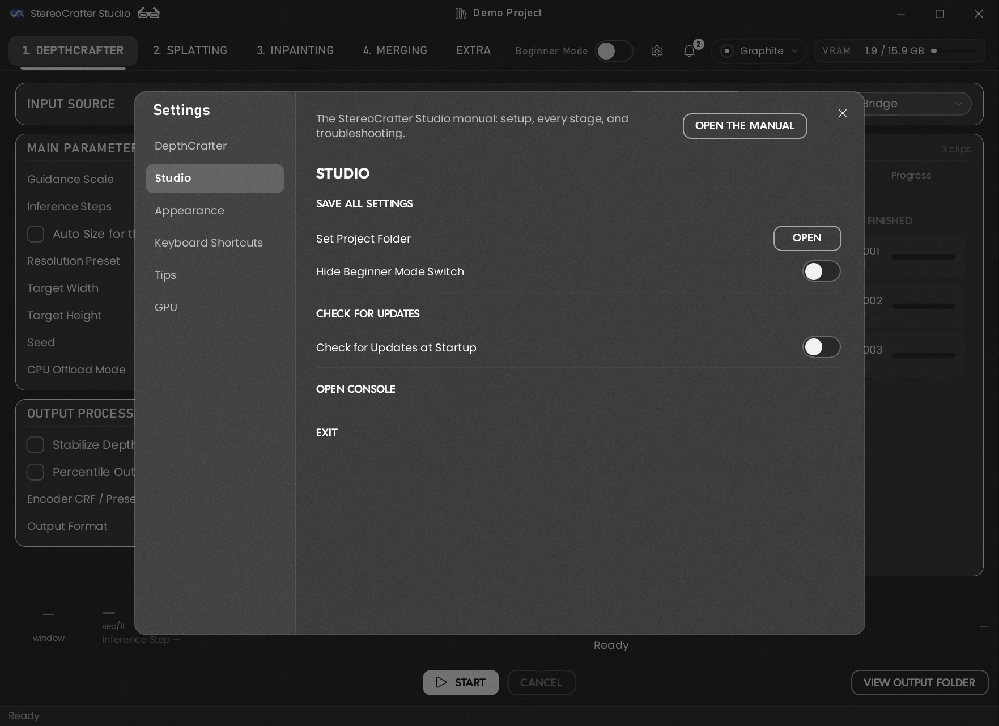
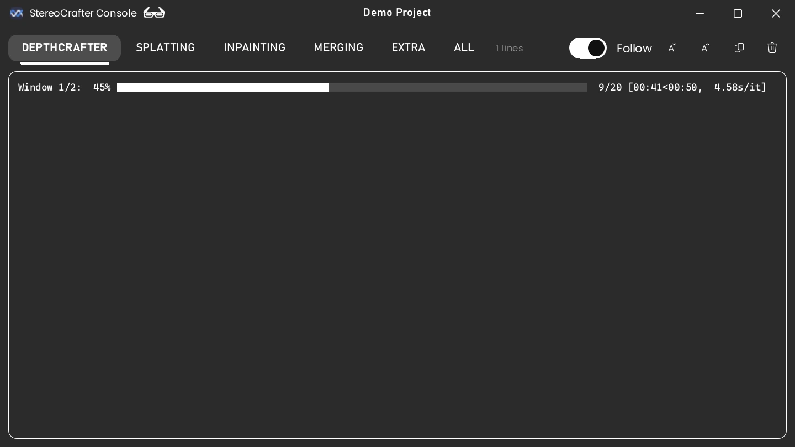
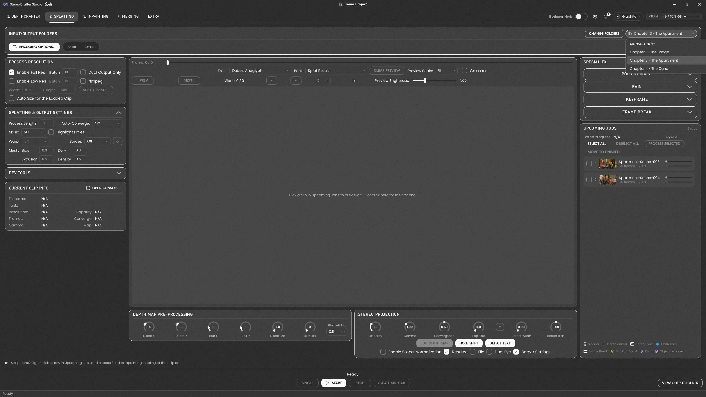
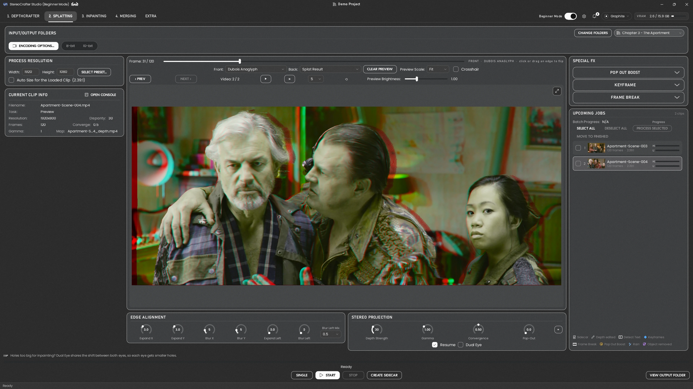

Getting started
What Studio does, how to start it, what everything on the screen is for, and how to lay out your folders so Studio can find your work by itself.
1 What Studio does #
StereoCrafter Studio turns an ordinary 2D video into 3D. It does this in steps, and each step has its own tab at the top of the window. You work through them from left to right, and the result of each step is what the next one starts from.
Beside the four numbered stages, the Extra tab holds Scene Cut, the Depth Map Editor, where you can fix a depth map by hand before Splatting uses it (Part 3), and Edge Fill, for the strip a deep warp leaves at a frame's edge.
Where your clips come from
DepthCrafter needs your movie cut into short clips, one per shot. It's a temporal model: it looks at a run of frames together and keeps the depth steady from one frame to the next, as long as they belong to the same scene. Give it a clip with several shots in it and it tries to keep the depth consistent across the cuts too, between scenes that have nothing in common, and the depth map quickly gets worse. So every clip should be a single shot.
What's optional is the tool you cut with. You can use any you like: DaVinci Resolve's scene cut detection, another editor, or by hand. Put the clips in your Source folder (section 4) and start at DepthCrafter. Scene Cut is included for convenience, so you can do the cutting without leaving Studio, which is why it sits in the Extra tab rather than being a numbered stage.
Where the 3D look is made
Most of your creative choices happen in Splatting. Disparity (Depth Strength) sets how deep the 3D is, Depth Map Pre-processing (Edge Alignment) tidies the depth map so its edges line up with the edges of objects in the picture (no shimmering or ragged outlines), and the Special FX add things like Pop Out Boost, Frame Break and Rain (rain put at depths of its own). The other stages mostly run on their own once they're set up.
What you end up with
A side-by-side 3D video: the left eye's picture and the right eye's picture next to each other in one frame. 3D TVs, VR headsets and 3D players know how to show each picture to the right eye.
2 Installing and starting Studio #
What your computer needs
- Windows and an NVIDIA RTX graphics card: any RTX 20, 30, 40 or 50 series card, or an RTX workstation card, with an up-to-date driver (version 580 or newer). Studio does its work on the card. GTX 10 series and older NVIDIA cards can't run it, and neither can cards from other makers.
- Graphics memory (VRAM): the more the better. 16 GB runs everything comfortably; smaller cards work with lighter settings (see Appendix A). Inpainting V2, an experimental option for problem scenes only, is the exception: it wants 20 GB or more, or plenty of system memory instead (see Inpainting V2). Studio has been tested on a machine with an RTX 5060 Ti with 16 GB of VRAM and 32 GB of system RAM.
- Two free tools that must be installed and on your PATH (so any program can find them):
Git (the installer installs it if it's missing) and FFmpeg -- a full build, with
ffprobe. You don't need the CUDA Toolkit: Studio's PyTorch brings its own CUDA. Studio checks the driver and FFmpeg each time it starts and tells you what's missing. - Plenty of disk space. Every step writes full videos, and a long chapter can use tens of gigabytes while it runs.
Installing
- Make a folder where you want Studio to live, and run the installer script
StereoCrafter_1click_Installer.batfrom inside it. - Start Studio (below) and get the models in Settings → Studio → Models: it lists each one, whether it's on this PC, and a Download for each one missing -- only the files Studio loads (Stable Video Diffusion, for one, is 1.5 GB there rather than 18). For the main pipeline that's DepthCrafter, Stable Video Diffusion and StereoCrafter, about 7.5 GB. Stable Video Diffusion is gated: accept its terms on its Hugging Face page and sign in there with a read token first.
Each model is needed only for the tools that use it:
- DepthCrafter and Stable Video Diffusion (gated) for DepthCrafter; StereoCrafter and Stable Video Diffusion for Inpainting.
- SAM 3 (Depth Map Editor, 3.4 GB, gated): also Download Weights on the editor's Segment page -- see Setting up SAM 3.
- ROSE (Erase from Clip, Edge Fill, about 3.7 GB): Set Up ROSE in the editor's Erase panel -- it builds an environment of its own.
- Scene Cut: OmniShotCut, and DINOv3 (gated) and SSCD for cut validation, download in Models;
TransNetV2 comes with Studio. AutoShot is only in the SceneCutGUI bundle on Google Drive
(Get It opens it): put
ckpt_0_200_0.pthin the models folder'sSceneCutfolder. - Inpainting V2 (experimental, 46.6 GB): also Download V2 Weights on its page -- Wan 2.1 VACE's text encoder, VAE and tokenizer, and StereoCrafter2.
Starting Studio
Double-click StereoCrafter Studio.exe in your Studio folder. A small black window
may flash up for a moment while Studio checks that everything is installed; then the Studio
window opens on the stage you used last.
Your project folder sits in the middle of the title bar, at the top of the window. Until you choose one it reads Select project folder…: click it and pick the folder your project lives in. From then on every stage keeps its input and output for each chapter inside it, and the project's name shows there instead. Once you have a few projects in one folder, the same click lists them all as tiles to switch between (Switching projects; section 4 shows how to lay a project out).

StereoCrafter Studio.exe and choose
Send to > Desktop (create shortcut) (on Windows 11, Show more options first) to start Studio
from your desktop, or pin it to the taskbar. The App Icon picker in the theme popout changes the icon's
colour live -- on the window, the taskbar and that shortcut.Studio remembers your settings, folders, theme and window size by itself, and saves them when you close it. If something goes wrong before the window appears, a window opens with the error so you can see what happened.
3 A tour of the window #
Every stage's page is laid out the same way, so once you know one you know them all. This is DepthCrafter's page.

1 2 3 4 5 6 7 8 9 10- Title bar. Drag it to move the window, double-click it to fill the screen. The three buttons on the right are the usual minimise, maximise and close. In the middle is the name of the project you're working on: click it to switch to another project (see Switching projects).
- Stage tabs. One tab per step, numbered in the order you use them, then Extra. Click a tab to change stage. Ctrl+Tab goes to the next one. Hover over Extra to pick one of its tools from the list that drops down; a click on the tab opens the one you used last.
- Theme. Colours and look: pick a theme, and turn Frosted Glass, Section Outlines and Film Grain on or off. The UI Scale knob makes everything bigger or smaller (Part 5).
- Beginner Mode. Hides the advanced settings and explains everything in plainer words. See section 5.
- Settings (the gear, or Ctrl+,). Everything that isn't on the page: your project folder, saving settings, the GPU, and each stage's extra options. Right of it, the bell keeps every message Studio has shown this session (a job finished, a folder set, a problem), newest first; a number on it counts the ones you haven't seen. Click it to read them, and Clear All empties it.
- VRAM. How much of your graphics card's memory is in use right now, by every program, not only Studio. Click it for the details.
- The page. The stage's settings, in panels. Hover over any setting, or its name, to see what it does.
- Current Clip Info shows the clip being worked on, and has the Open Console button (more on the console below).
- The action bar. The progress of the running job, a line saying what it's doing, and the buttons that start and stop it. View Output Folder opens the folder the results go to.
- Status line. Ready when nothing is running; otherwise which stage is busy and what it's doing, whichever tab you're looking at.
Settings
The gear opens Settings. The list on the left starts with the options of the stage you're looking at, so it changes as you change tabs, then Studio, Appearance, Keyboard Shortcuts, Tips and GPU. Tips lists every tip in Studio, by stage -- the same ones each stage shows, one at a time, just above its progress bar.

Appearance has two groups:
- Window: Show Tips turns the tips above each stage's progress bar on or off, and Fit Window to Content sizes the window to the page you're on (Ctrl+0 does the same from anywhere).
- Projects: the Projects Folder that holds all your projects, and an optional TV Shows Folder if you keep shows somewhere else. See Switching projects.
At the top of Studio, Open the Manual opens this manual, and at the top of each stage's section a button opens that stage's own part of it (F1 does the same from any page).
Check for Updates looks for a newer Studio on its GitHub page and can install it -- there's nothing to set up. Check for Updates at Startup (off until you turn it on) does that check once, a few seconds after Studio opens, and tells you when there's something new; it doesn't check again that session unless you click Check for Updates, and it never installs anything by itself.
A copy of Studio downloaded as a ZIP can update too. The first check says so and lists the files that differ from the latest version; Install & Restart brings it up to date and sets it up so later updates work as usual. Your settings, models, projects and outputs stay; changes made to Studio's own files are replaced.
Models shows where Studio keeps its models and which of them are on this PC:
- Models folder: Change… points Studio at another folder or drive -- one
with more room, or one two installs share. Nothing is moved or copied: move the model folders there
yourself, or download them there. A model not moved yet is still found in Studio's own
weightsfolder, and Use Default goes back to that one. Not while a job runs. - Hugging Face: Stable Video Diffusion, SAM 3 and DINOv3 are gated. Open the model's page
(Ask for Access on its row, or the ⓘ beside it) and ask for access -- Stable
Video Diffusion's is granted at once, the others by their makers. Then make a Read token in
your Hugging Face settings (Get a Token), paste it in and press
Sign In. It's kept where
hf auth loginkeeps it, so thehfcommand and Studio share it; Studio never saves it in its own settings. - Download on a model's row gets just the files Studio loads, into the models folder. One downloads at a time and the others queue behind it; while a job runs, a download waits for it to finish, so the job isn't slowed. Stop keeps what came down: the next Download carries on from there.
weights folder and Studio uses those models where they are -- nothing to download again. Studio
looks for the same folder names (stable-video-diffusion-img2vid-xt-1-1, DepthCrafter,
StereoCrafter, and SceneCut from the SceneCutGUI bundle), so those rows show
Installed. Pick the weights folder itself, not the install above it. A model it doesn't have
downloads into that folder, and ROSE needs Set Up ROSE again.Picking folders and clips
Every Browse button opens Studio's folder picker. Each level of folders sits side by side, every folder shows how many clips (or folders) it holds, and the last column lists the clips in the folder that's open.
- Click a folder to open it in the next column; double-click it, or press Select Folder, to use it.
- Where a single clip will do (the input folders of DepthCrafter, Splatting, Inpainting and Merging), click a clip and press Select Clip to work on just that one; double-clicking it picks it straight away. Output folders take a folder only.
- Right-click in a column for New Folder: type its name and press Enter (Esc cancels).
- Right-click a folder or clip for Move to Recycle Bin. Studio asks first, and you can put it back from the Recycle Bin. On a drive with no Recycle Bin (a network share, some USB drives) nothing is deleted. Something too big for its drive's Recycle Bin can't go there: Studio says so and asks, as Windows does -- Delete Permanently removes it for good, Keep It leaves it. The open project's folder (and a folder holding it) and the folders a running job is using can't be moved to the Recycle Bin.
- The path along the top is clickable, and the buttons at the top right jump to your project folder or any drive.
- Under the drives are four Shortcuts for the folders you use most. Click an empty one (+ Shortcut) to keep the highlighted folder there; click it later to jump straight back. Right-click a shortcut to change or remove it.
- Windows Explorer… opens Windows' own dialog instead, if you'd rather pick that way. Where a clip will do too, it asks whether you're picking a folder or a clip.
The console
The console is a separate window that shows what Studio is doing behind the scenes, line by line. You don't need it to use Studio, but it's the first place to look when something goes wrong. Open it with Open Console, or Ctrl+`.

- Each stage's tab shows only that stage's messages; All shows every message. DepthCrafter's, Splatting's and Inpainting's tabs keep to the essentials: each clip's separator line, the progress bars, the total times, and any warnings or errors. The rest of their detail is on All (Splatting's and Inpainting's debug options open their tabs up again).
- Every clip starts with a separator line giving its number in the batch and its name, so it's easy to see where one clip's messages end and the next one's begin.
- The project's name is shown at the top of the console too.
- Drag across lines to select them, and Ctrl+C copies what you picked: handy for asking for help. The copy button copies the whole tab.
- Follow keeps the newest line in view. It switches off when you scroll up to read.
- Closing the console only hides it. Messages keep arriving, and they're all there when you open it again.
Keyboard shortcuts
Every shortcut is also listed in Settings → Keyboard Shortcuts. Single keys and arrows work when you're not typing in a box.
| Ctrl+1 … Ctrl+4 | Go to DepthCrafter, Splatting, Inpainting or Merging (Ctrl+5: Extra) |
| Ctrl+Tab | Next stage (Ctrl+Shift+Tab: the one before) |
| Ctrl+P | Open the project list (Esc closes it) |
| Ctrl+, | Open or close Settings |
| Ctrl+` | Show or hide the console |
| Ctrl+0 | Fit the window to the page you're on |
| Ctrl+= · Ctrl+− | UI Scale up · down |
| F1 | Open this manual at the stage you're on (in Extra: Scene Cut, or the Depth Map Editor's part) |
| ← → | In a preview: one frame back · forward (Shift: ten) |
| Home · End | In a preview: the first · last frame |
| ↑ · ↓ | In a preview: the next · previous clip |
| Space | In a preview: play or pause (Shift+Space: fast forward) |
| F11 · Esc | Full Preview, full screen (Splatting, Merging) · close it (F11 too) |
| Ctrl+S | Splatting: create or update the clip's sidecar |
| Ctrl+T | Splatting: Detect Text |
| Ctrl+M | Splatting: Edit Depth Map (the clip in the Depth Map Editor) |
| S · D | Splatting: add a static · dynamic keyframe |
| S · D | Depth Map Editor: key the selected layer, static · dynamic |
| Ctrl+Z · Ctrl+Y | Depth Map Editor: undo · redo the last edit (Ctrl+Shift+Z redoes too) |
| I · O | Detect Text: Set From · Set To at the frame showing |
| Ctrl+C · Ctrl+A | In the console: copy what's selected · select the whole tab |
4 Your project folder #
You can point each stage at any folders you like, but it's much easier to keep each movie in one project folder laid out the way Studio expects. Then you pick a chapter from a list and Studio fills in every folder for every stage by itself.
How to lay out the folders
One project folder per movie. Inside it, one folder per stage; inside each of those, one folder per chapter:
Studio finds the folders by a few simple rules, so you can name them your own way:
- Stage folders are found by a word in their name. The name just has to contain
Source,Depth,Splat,InpaintandMerged. For the last one, a name withLRas a word of its own works too (such asDM Converted LR Clips), if you already use that. Anything else in the name is up to you: here every folder starts with the movie's initials,DM, so they're easy to tell apart from another movie's. - Chapter folders are matched by their number, not their whole name. Start each
chapter folder's name with
Chapterand its number (Ch 2andC2work too). If the name after the number differs a little between stages ("The Chase" in one, "Chase" in another), Studio still knows they're the same chapter. - Folders without a chapter number are ignored, so a spare folder of notes or tests won't confuse it.
- You only make the chapter folders. Each stage creates what it needs inside them, such
as Splatting's
hiresandlowres.
TV shows
A show has one more layer or two: seasons and episodes. Inside each episode's folder, lay out the stage folders exactly as for a movie:
The chapter list then names each chapter with its episode, such as S1E1 · Chapter 1.
Studio counts a project as a TV show when it has a folder with Episode in its name
somewhere inside. A movie kept one folder down (in a Movie folder, say) is still a
movie.
The finished folders
When a stage has used a clip, it moves that clip into a folder called finished
inside the folder it came from. That way, if you start the same chapter again, it carries on
with the clips it hasn't done yet instead of starting over. The next stage knows to look in
finished, so you never have to move anything yourself.
finished folders deep. That's normal, and Studio finds it.Telling Studio where the project is
- Open Settings (the gear) → Studio, and next to Set Project Folder press Open.
- Choose the project folder itself:
Demo Moviein the example, not one of the folders inside it.
The project's name then shows in the middle of the title bar.
Switching projects
If you keep all your projects in one folder, tell Studio where it is once: Settings → Appearance → Projects Folder. Then click the project name in the title bar, and every project in that folder is shown as a tile. Click one to switch to it.
- Movies and TV Shows are on separate tabs. The list opens on the tab of the project you're in.
- Posters. Put a picture (
.jpgor.png) in a project's folder and it becomes that project's tile. Without one, Studio uses the cover art stored inside the movie's video file, if it has some (it ignores a plain frame from the film saved as a thumbnail). Otherwise the tile shows a folder. - Your projects folder can be laid out three ways: projects straight inside it, movies
and shows mixed; or
MoviesandTV Showsfolders inside it, each holding projects; or shows kept somewhere else entirely, with that folder set as the TV Shows Folder in Settings. - Open Other Project… picks any folder, even one outside your projects folder. Change Projects Folder… points Studio at a different one.
Each project remembers where you were. When you switch, every stage goes back to the chapter (or the folders) it last used in that project. Come back later, and DepthCrafter is still on chapter 5 while Splatting is on chapter 3.
Picking a chapter
Every stage's folder panel now has a chapter list at the top right. Pick a chapter, and the stage's input and output folders are filled in from your project. The folder fields fold away, since you don't need to see them.

1 2Each stage has its own chapter choice, because you'll usually have different chapters at different stages: DepthCrafter can work on chapter 5 while Splatting is still on chapter 3. Choose Manual paths at the top of the list to set the folders yourself again.
5 Beginner Mode #
Studio has a lot of settings, and most of them are for fine-tuning. Beginner Mode, the switch at the top right, keeps the page down to the settings you need to get a good result:
- Advanced settings are hidden. They keep their values; they're just out of the way. Splatting's Rain is hidden too, since it needs tuning for each scene.
- Hover help is in plain language, like this manual.
- A few settings get plainer names.
- A few options are set for you to the safe choice, such as making both the full-size and the smaller Splatting results, which the later stages need.
Never use it? Settings > Studio > Hide Beginner Mode Switch takes the switch off the top bar. It comes back on its own while Beginner Mode is on, so you can always turn it off.

Turn it off whenever you want everything back. All your settings, and the options it set for you, go back to how you had them. Beginner Mode can't be switched while a job is running.